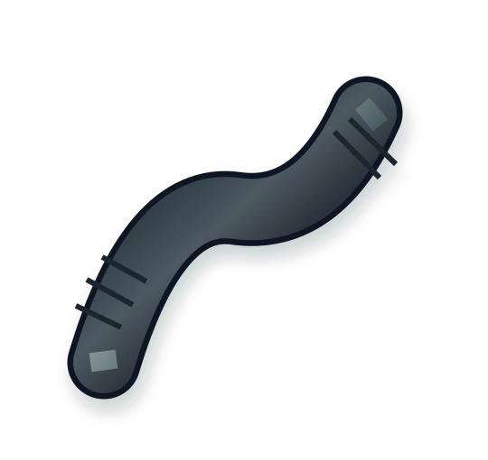
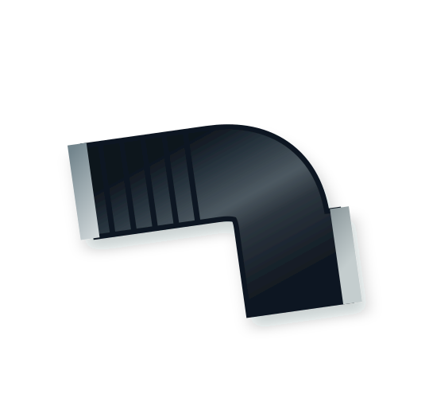
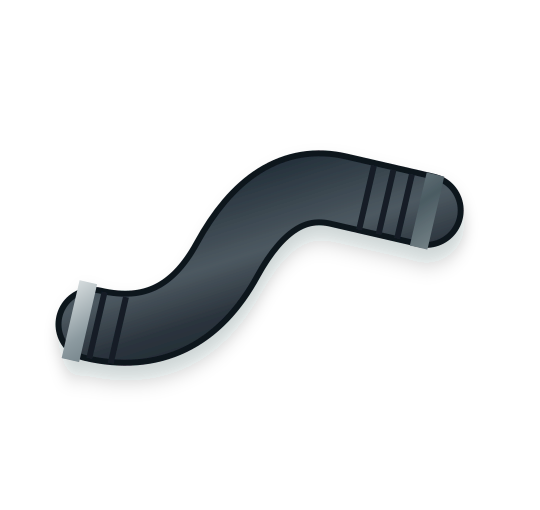
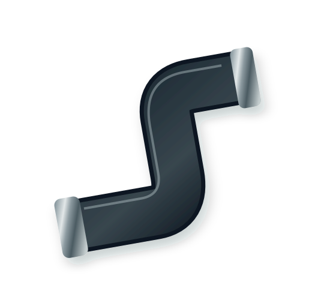
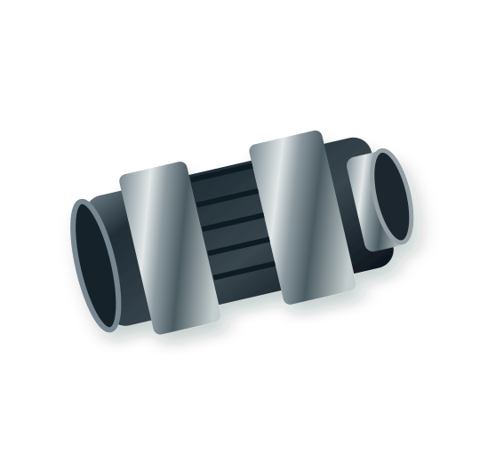

Nossos produtos
Mangueiras, tubos, adaptadores e abraçadeiras para diferentes sistemas automotivos. Explore as famílias de produtos e consulte sua aplicação com nossa equipe.
Mangueiras automotivas
Soluções para sistemas automotivos de linha leve, média e pesada.
Ver detalhesMangueiras de intercooler
Componentes para condução de ar em sistemas turboalimentados.
Ver detalhesMangueiras do radiador
Mangueiras para circulação de líquido de arrefecimento do motor.
Ver detalhes
Mangueiras de ar quente
Linha para circulação de líquido no sistema de aquecimento.
Ver detalhes
Mangueiras do filtro de ar
Conexões e dutos para conduzir ar no sistema de admissão.
Ver detalhes
Mangueiras de respiro
Peças para ventilação e condução de vapores em sistemas do veículo.
Ver detalhes
Tubos de água automotivos
Tubulações e componentes do circuito de arrefecimento.
Ver detalhes
Adaptadores automotivos
Soluções para conexões entre mangueiras e componentes.
Ver detalhesAbraçadeiras automotivas
Fixação de mangueiras e conexões em diferentes diâmetros.
Ver detalhesPrecisou de mangueiras? Conte com a UMA.
Fale com uma das nossas três unidades e encontre a solução para sua aplicação.